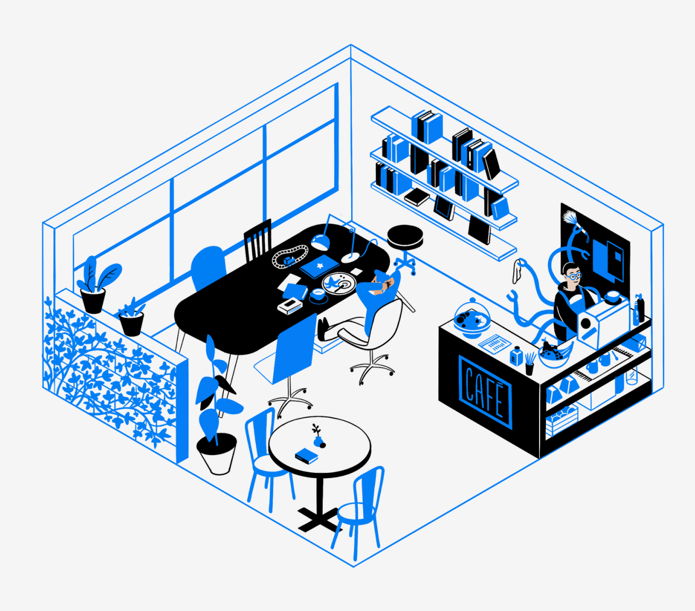

Receitas
Confira algumas receitas que coletamos para seu lanchinho caseiro:
-
Receita Aeropress
~5 min
-
Receita de Prensa Francesa
~15 min
Esta é nossa zona de estudo! Temos aquele cafezinho para energizar você e vibrações aconchegantes para soltar a criatividade.

Confira algumas receitas que coletamos para seu lanchinho caseiro:
Receita Aeropress
~5 min
Receita de Prensa Francesa
~15 min